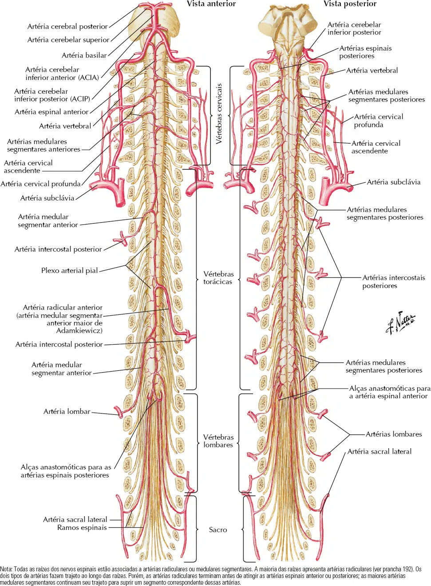
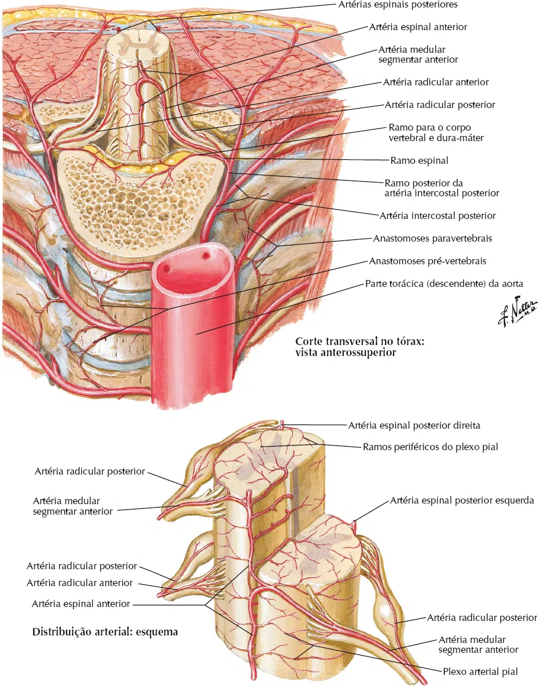

A medula espinal é irrigada basicamente por três artérias espinais, uma anterior e duas posteriores.
As artérias espinais apresentam disposição longitudinal e, anastomosam-se com as artérias radiculares (provenientes das artérias vertebrais e aorta).
Artéria espinal anterior: se origina das artérias vertebrais, na cavidade craniana.
Desce longitudinalmente na medula espinal, alojada na fissura mediana anterior da medula, distribuindo ramos medulares mediais e laterais.
Artérias espinais posteriores: cada uma se origina da sua respectiva artéria vertebral.
Posteriormente, a artéria espinal posterior contorna a face lateral do bulbo, alcançando o sulco póstero-lateral.
Nesse sulco tem trajeto descendente pela medula espinal.

